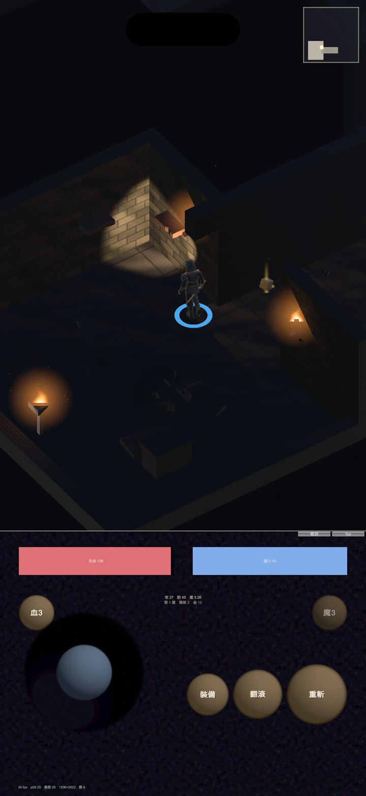

地城迴響 · 裝飾鋪開
座標改成依房間尺寸換算、密度依面積換算、四面牆每面至少一件。 200 層連通性回歸：0% 不可達，保底一次都沒動用。

=== 裝飾鋪開後的連通性回歸 === 樓層數 200 出口不可達 0 (0.0%) 動用保底移除 0 層，共移除 0 個，單層最多 0 渲染物件/層 平均 109.6，最少 34，最多 166 障礙物/層 平均 10.8 耗時 15.7 秒
保底機制一次都沒被動用，這比「保底救回來了」更好——代表擺放階段的
門口淨空檢查本身就夠嚴，EnsureReachable 沒有東西要移除。
安全層（每 17 層一個）也含在測試序列裡。
回歸刻意不進 Play 模式。Unity 的 GUI／Play 模式在這個專案上連續卡死過三次。
但連通性其實是純邏輯：Floor.Generate 決定幾何、Furnish
註冊障礙物、EnsureReachable 做保底——都不需要遊戲迴圈。
為此把 Object.Destroy 換成兩種模式都能用的 Room.Kill
（編輯模式下 Destroy 會報錯且不會真的刪掉）。整條建置流程現在可以無頭執行，
200 層只要 15.7 秒，可以隨時重跑。
| 項目 | 樣品階段 | 鋪開後 |
|---|---|---|
| 座標 | 寫死 | 依 hw／hd 換算 |
| 密度 | 固定 14 件 | 依面積換算（面積差近一倍） |
| 牆面分配 | 集中在東牆 | 四面各至少一件 |
| 傢俱姿態 | 固定角度 | 隨機翻倒／側躺／半埋 |
| 套用範圍 | 只有第一間房 | 所有房間 |
為什麼一定要改成換算：房間模板從 3.6×4.4 到 5.2×5.6，面積差將近一倍。 樣品的寫死座標在小房間會把桌組推進門口淨空範圍——實測那一輪就少了兩件。
渲染物件平均每層 109.6、最多 166。這是 draw call 的上界， 實際會因靜態合批而更低；污漬場（每房 20+ 張）與骨骸（每組 10～18 塊） 已經各自併成單一網格。
這不是實機幀率。效能 gate 仍然掛著，而且現在要量的比原本更多： 視野錐陰影、掉落物光柱、灰塵粒子，加上這 110 個渲染物件。
也沒有改動前的基準線可以對比——這個 Unity 專案不在版控裡，取不到舊版。